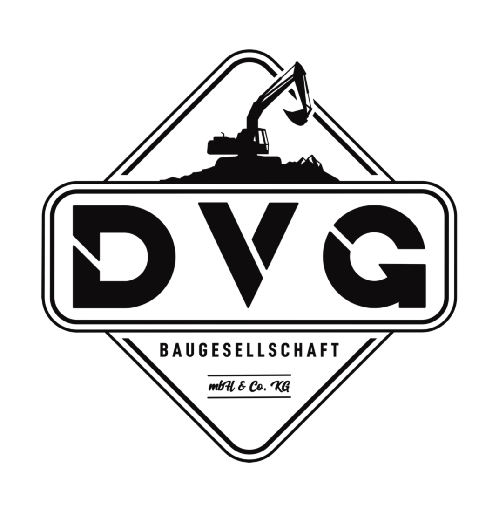

Wünsche verstehen
Ihr Vorhaben, Ihre Fragen und die Ausgangssituation gemeinsam besprechen.

Ein gutes Bauprojekt beginnt mit einem klaren Gespräch. Wir hören uns Ihre Wünsche an, betrachten die Ausgangssituation und entwickeln mit Ihnen die nächsten Schritte für die Ausführung.
Projekt besprechenWAS WIR FÜR SIE TUN
Ob einzelne Arbeit oder größeres Vorhaben: Wir besprechen, was Ihnen wichtig ist und welche Leistungen dafür benötigt werden. Dabei geht es auch um Zugänglichkeit, vorhandene Flächen, Übergänge und die gewünschte Nutzung.
Aus dem Gespräch entsteht eine gemeinsame Grundlage für Umfang und Ablauf. Wir stimmen die Leistungen aufeinander ab und begleiten Sie von der Beratung über die Planung der Ausführung bis zur Umsetzung. Das kostenlose Erstgespräch ist Ihr Einstieg.
Ihr Vorhaben, Ihre Fragen und die Ausgangssituation gemeinsam besprechen.
Die passenden Arbeiten und ihre Schnittstellen miteinander abstimmen.
Die nächsten Schritte für die praktische Umsetzung planen.
PLANUNG UND BERATUNG.
Beratung zur Gestaltung Ihrer Auffahrt.
Weitere Projekte ergänzen wir nach und nach.
KLEINES VORHABEN ODER GROSSES PROJEKT?
Großharrie und ganz Schleswig-Holstein.
Ihr kostenloses Erstgespräch ist der Anfang.